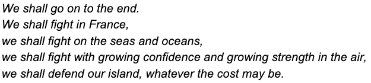
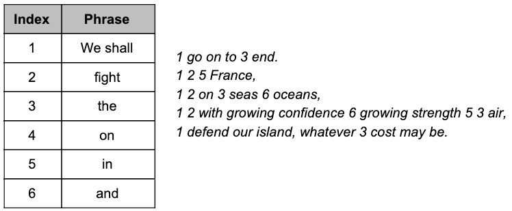

Compression is the process of reducing the space required by a file, typically without loss of important data.
No data is lost in lossless compression – what a surprise! There are two main types of lossless compression: run length encoding, and dictionary encoding.
Run length encoding looks for repeating characters, and represents them with numbers. For example, the string "aaaaaBBBBBBccc" becomes "a5B6c3" meaning there are 5 "a" characters, 6 "B" characters, and 3 "c" characters.
Dictionary encoding replaces repeated words or phrases with a symbol which can be indexed in a dictionary. The dictionary stores the meanings of symbols. Here is an example of dictionary encoding with the paragraph below.
 Lossy compression removes unnecessary data. In audio files, high and low frequencies which can't be heard by humans are removed. In video files, common colours replace uncommon shades of those colors do decrease the bid depth of the file. Unlike lossless compression, the original file cannot be retrieved after lossy compression is applied.
Encryption is the process of obfuscating data to keep it secure when it's being transmitted.
Symmetric encryption uses a single private key that both the sender and receiver have. The sender first encodes the data, before transmitting it to a recipient. The encoded data can then be decoded using the private key.
Asymmetric encryption uses two keys – a private key and a public key. The public key (publicly available) can be used to encode data, but it cannot decode the data. Only the private key can decode the data. This means that anyone can send you a message, but only you can decode the message. This process also works in reverse. If you encode a message with your private key, anyone can decode it with the public key.
Hashing is a process where an input (called a key) is converted to an output (called a hash) by using a hash function. A simple example of a hash function being applied to a password would be to sum the position in the alphabet of each character. For example, "password" becomes 16+1+19+19+23+15+18+4 which equals 115. This process cannot be reversed because multiple combinations of characters will sum to 115. Usually, a good hash function will have a low chance for any key to have the same hash, so this process is useful for checking passwords.
Another use of hashing is hash tables. A hash table is a data structure which holds key-value pairs.